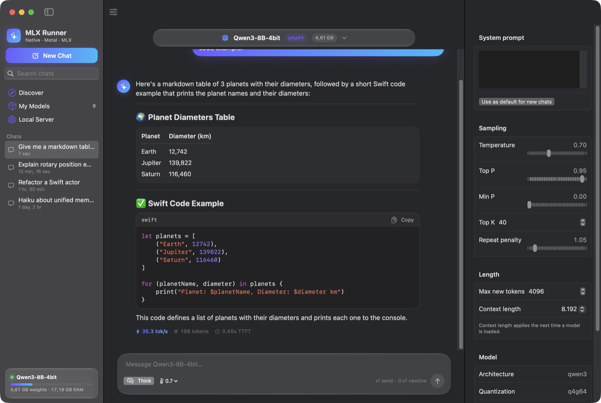
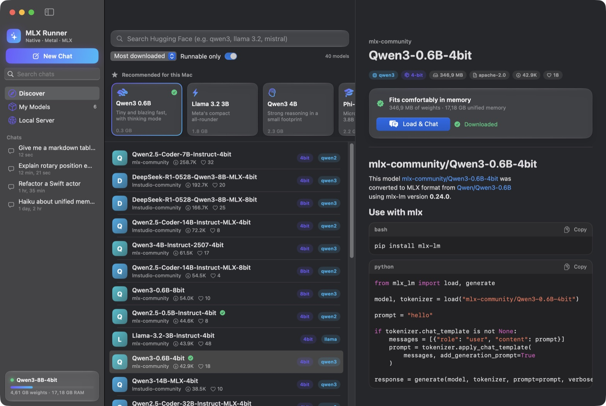
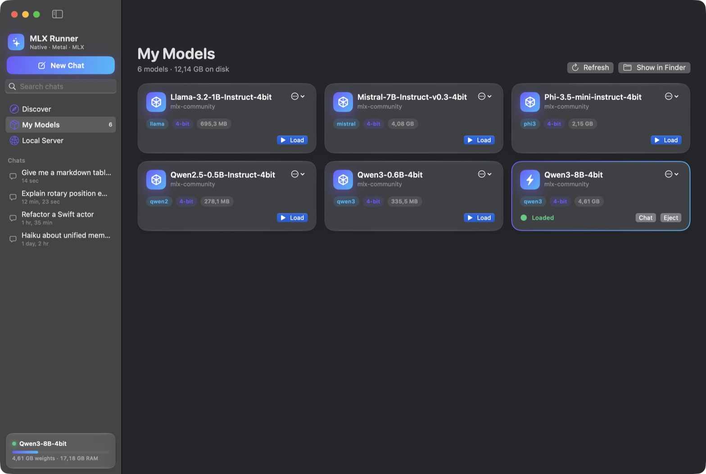
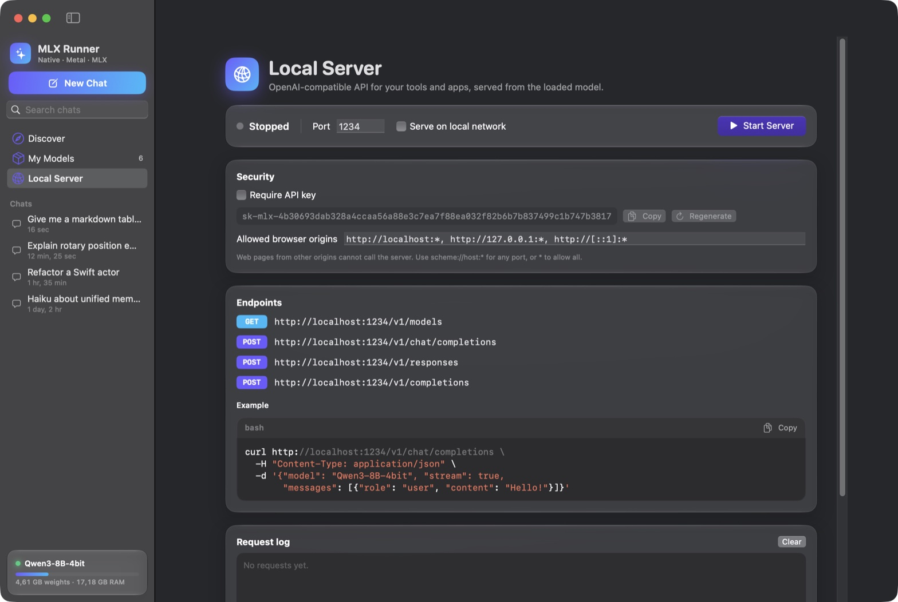
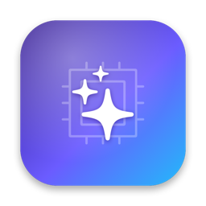

Free MIT · 100% Swift · zero dependencies
LLMs at the speed
of unified memory.
MLX Runner is a native macOS app to discover, download and chat with MLX models from Hugging Face. Its inference engine is written from scratch in Swift and Metal. No Python, no packages, no copy of your weights.
Why is generating tokens memory-bound?
Generating a token means reading every weight once. A 4-bit 7B model is about 4 GB, so a 197 GB/s memory bus caps decode near 48 tokens per second. MLX Runner gets close to that cap: one fused Metal kernel dequantizes 4-bit weights and multiplies in a single pass. q, k and v are one matvec and gate and up another. RMSNorm, RoPE and the KV-cache append run as one kernel. Attention uses online softmax across simdgroups. The weights are memory-mapped and wrapped in Metal buffers without a copy, so nothing sits between unified memory and the GPU. Small models feel instant. Big ones run close to what the hardware allows.
- decode
- 285 tok/s
- tokens
- 0
- elapsed
- 0.00 s
mlxr bench measured for each model on an M2 Pro (16 GB). The text is ours; the pace is the model's.- 285tok/s decode, Qwen2.5 0.5B
- 2,970tok/s prefill, Qwen2.5 0.5B
- ~82%of memory bandwidth, Mistral 7B
- 0third-party dependencies
Same prompt. Five models. Real speeds.
A 512-token prompt and a 256-token answer, paced by the prefill and decode rates mlxr bench measured on an M2 Pro (16 GB). Cyan is prefill, the gradient is decode. Watch where the time goes as the weights grow.
- Qwen2.5 0.5B 278 MB1.07 s
- Qwen3 0.6B 336 MB1.29 s
- Llama 3.2 1B 695 MB1.84 s
- Phi-3.5 mini 2.15 GB5.54 s
- Mistral 7B v0.3 4.08 GB9.72 s
| Model | Weights | Prefill (512 tok) | Decode @16 | Decode @1K ctx |
|---|---|---|---|---|
| Qwen2.5 0.5B Instruct | 278 MB | 2,970 tok/s | 285 tok/s | 258 tok/s |
| Qwen3 0.6B | 336 MB | 2,030 tok/s | 247 tok/s | 204 tok/s |
| Llama 3.2 1B Instruct | 695 MB | 1,170 tok/s | 183 tok/s | 165 tok/s |
| Phi-3.5 mini | 2.15 GB | 320 tok/s | 65 tok/s | 57 tok/s |
| Mistral 7B v0.3 | 4.08 GB | 166 tok/s | 38.6 tok/s | 36.6 tok/s |
The 7B ceiling
Every token reads every weight. Once.
Decoding one token streams the whole model through the GPU, so speed is capped by memory bandwidth, not by compute. This M2 Pro measures 197 GB/s with a plain read kernel, which caps a 4.08 GB model at about 48 tok/s.
MLX Runner decodes Mistral 7B at 38.6 tok/s: about 82% of that cap. Going faster takes more bandwidth (M-series Max chips have about 400 GB/s), fewer bits per weight, or speculative decoding, which is implemented and opt-in (mlxr run --spec).
- Read bandwidth
- 197 GB/s
- Ceiling, 4.08 GB
- ≈ 48 tok/s
- MLX Runner
- 38.6 tok/s
An engine written from scratch, for Metal.
Apple's mlx-swift is a third-party package, so MLX Runner doesn't use it. It runs MLX models on its own kernels instead, from the same files mlx-lm reads. Any compatible mlx-community repo works without conversion.
- Unified memorysafetensors,
mmaped, wrapped in Metal buffers with no copy - q · k · vone fused 4-bit matvec over three matrices, bias folded in
- Norm · RoPE · KVper-head RMSNorm, RoPE and KV-cache append as one kernel
- Attentiononline softmax across 16 to 32 simdgroups
- gate · up · downfused matvecs; the residual add is fused with the next RMSNorm
- Next tokensampled, streamed, appended to the KV cache
Prefill on tensor tiles
Quantized GEMMs on
simdgroup_matrixtiles. Each weight tile is dequantized once and shared by 32 tokens.Flash attention
8×8 simdgroup-matrix ops for Q·Kᵀ and P·V, with the softmax rescale done as a diagonal-matrix multiply.
KV-cache prefix reuse
Prompt tokens shared with the previous request are skipped, so follow-up turns start almost instantly.
Loads in seconds
Zero-copy weights: about 0.5 s for the small models, 1.6 s for Phi-3.5 and 3.3 s for Mistral 7B, warm-up included.
2 to 8 bits
MLX affine quantization at 2, 3, 4, 5, 6 or 8 bits, group sizes 32, 64 or 128. The 4-bit decode path is the optimized one.
Nothing else
The Swift standard library plus SwiftUI, Foundation, Metal, Network and CryptoKit. No SwiftPM packages, no vendored code, no Python.
Runs today
qwen3thinking toggleqwen2q/k/v biasesllamaLlama 3 RoPE scalingmistralSentencePiece BPEphi3LongRoPE
Each verified end to end, with prefill and token-by-token decode checked for the same next-token distribution. Not yet: Gemma, mixture-of-experts and vision models; Discover marks them as not runnable.
A Mac app, not a wrapper.
SwiftUI with Liquid Glass on macOS 26. Search the Hub, download with verified checksums, chat with Markdown and code, and serve the loaded model to your tools.

Chat
- Streaming Markdown: tables, quotes, highlighted code with copy.
- Live tok/s, token count and time to first token on every reply.
- Qwen3 thinking in a collapsible block, with a toggle to turn it off.
- Edit and resend, regenerate, per-chat system prompt, searchable history.
- Inspector for temperature, top-p, top-k, min-p, repeat penalty and context length.

Discover
- Search the Hub for MLX models by downloads, likes, trending or recency.
- Exact architecture (from
config.json) and quantization on every result. - "Runnable only" hides what the engine can't run.
- Recommended picks that fit your Mac's memory, and a fit check per model.

My Models
- Background downloads with progress, speed, cancel and resume.
- Every LFS file checked against the SHA-256 the Hub publishes.
- Models already in
~/.cache/huggingface/hubshow up automatically. - A memory guard refuses models that won't fit, with a clear message.

Local Server
- OpenAI-compatible: Responses, Chat Completions, Completions and
/v1/models. - Binds to localhost; API key optional there, required on the LAN.
- Browser origin allowlist and a request log.
Command line
mlxr, the same engine in your terminal.
Search, download, run, serve and benchmark from a shell. It shares the app's model library, and every number on this page came from mlxr bench.
mlxr search qwen3mlxr download mlx-community/Qwen3-4B-4bitmlxr run <model> -p "Explain RoPE" --no-thinkmlxr serve <model> --port 1234mlxr bench <model>
$ mlxr run mlx-community/Qwen2.5-0.5B-Instruct-4bit -p "Write a haiku about Metal shaders." --temp 0
Loaded Qwen2.5-0.5B-Instruct-4bit [qwen2, q4g64, 24 layers, chatML] in 0.55s
[prompt: 37 tokens, 953 tok/s, ttft 0.039s]
Metal shaders: a new art,
Transforming code into magic,
A new form of art.
[generated 19 tokens at 276.3 tok/s, stop: stop, drafts accepted 0/0]
$ mlxr bench mlx-community/Qwen2.5-0.5B-Instruct-4bit
# … kernel micro-benchmarks …
prefill 128 tokens: 2830.5 tok/s
prefill 512 tokens: 2968.7 tok/s
prefill 2048 tokens: 2645.0 tok/s
decode @ 16: 283.8 tok/s (wall 3.52 ms, gpu 3.02 ms per token)
decode @1024: 252.4 tok/s (wall 3.96 ms, gpu 3.36 ms per token)Your tools already speak its API.
The local server is OpenAI-compatible, including the Responses API with typed streaming events and the current Chat Completions spec. Point any OpenAI SDK at it.
# Responses API, streamed
curl http://localhost:1234/v1/responses \
-H "Content-Type: application/json" \
-d '{"model": "Qwen3-0.6B-4bit", "stream": true,
"input": "Explain RoPE in one paragraph."}'
# Or any OpenAI SDK
client = OpenAI(base_url="http://localhost:1234/v1",
api_key="not-needed-on-localhost")- Safe by default. Binds to localhost and rejects other
Hostheaders, so DNS rebinding can't reach it. - No drive-by browsers. Unknown browser
Origins are refused; JSON bodies only. - Key on the LAN. An API key is optional on localhost and required in LAN mode.
- Bounded. Timeouts, connection, queue and size limits.
- Honest errors. Tools, JSON mode, images or logprobs get an OpenAI-style 400 instead of being silently ignored.
- Reasoning included. Qwen3 thinking comes back as
reasoning_contentor areasoningitem.
Model files are untrusted input.
MLX Runner runs files from the internet on your GPU and can open a port. It is built like it knows that.
Validated before the GPU
safetensors headers, tensor offsets, config dimensions, token ids and every weight shape are checked first. Chat text is tokenized as plain text, so it can't inject control tokens.
Verified downloads
Every LFS file is checked against its SHA-256 from the Hub. Your Hugging Face token lives in the Keychain and goes only to Hugging Face hosts, never to the CDN.
Signed updates
An update installs only if its Ed25519-signed
SHA256SUMS, its checksum and the app's code signature all verify. Then it swaps in atomically, with rollback.Collects nothing
Prompts and replies never leave your Mac. It talks to Hugging Face for models and to GitHub for the update check, which you can turn off.

Get MLX Runner
For Apple silicon Macs running macOS 15 or newer. Free and open source, MIT licensed.
| File | Size | SHA-256 |
|---|---|---|
| MLX-Runner-<version>-macos-arm64.dmg | … | … |
| mlxr-<version>-macos-arm64.tar.gz | … | … |
| SHA256SUMS | … | … |
| SHA256SUMS.sig | … | … |
First launch
Open the DMG and drag MLX Runner to Applications. The app is ad-hoc signed, not notarized by Apple, so macOS blocks the first launch. Right-click the app and choose Open, or run:
xattr -dr com.apple.quarantine "/Applications/MLX Runner.app"After that, new versions arrive through MLX Runner → Check for Updates…, which verifies each one before installing it. Prefer to check it yourself first? That's next.
Verify before you run it
Every release is built by GitHub Actions from a tagged commit on a clean runner. Three independent checks prove the file you have is that build: its checksum, the release signature, and where it was built.
Download the app, the checksum list and its signature
curl -LO https://github.com/BackendStack21/mlx-runner/releases/download/<tag>/MLX-Runner-<version>-macos-arm64.dmg curl -LO https://github.com/BackendStack21/mlx-runner/releases/latest/download/SHA256SUMS curl -LO https://github.com/BackendStack21/mlx-runner/releases/latest/download/SHA256SUMS.sigFor the CLI, download
mlxr-<version>-macos-arm64.tar.gzinstead; every step below works the same.Check the SHA-256
shasum -a 256 -c SHA256SUMS --ignore-missingExpect
MLX-Runner-<version>-macos-arm64.dmg: OK. It must also match the hash in the table above.Check the release signature
curl -fsSLo mlx-runner.pub https://raw.githubusercontent.com/BackendStack21/mlx-runner/main/packaging/update-key.pub openssl pkeyutl -verify -pubin -inkey mlx-runner.pub -rawin -in SHA256SUMS -sigfile SHA256SUMS.sigExpect
Signature Verified Successfully. Needs OpenSSL 3 or newer (brew install openssl; the built-in one is LibreSSL). This is the same Ed25519 signature the in-app updater checks before installing anything.Check where it was built
# GitHub CLI: https://cli.github.com gh attestation verify MLX-Runner-<version>-macos-arm64.dmg --repo BackendStack21/mlx-runnerChecks a Sigstore-signed SLSA provenance statement in a public transparency log. It proves the file came out of this repository's release workflow at a specific commit, and it doesn't depend on this website.
Install the CLI (optional)
tar -xzf mlxr-<version>-macos-arm64.tar.gz sudo install -m 755 mlxr-<version>-macos-arm64/mlxr /usr/local/bin/mlxrAny directory on your
PATHworks. Downloaded with a browser instead ofcurl? Clear the quarantine flag the same way:xattr -d com.apple.quarantine /usr/local/bin/mlxr.
Or build it yourself
You need an Apple silicon Mac with macOS 15 or newer and Xcode or its command-line tools (Swift 6). There are no dependencies to fetch.
git clone https://github.com/BackendStack21/mlx-runner.git
cd mlx-runner && git checkout <tag>
make test
make app # build/MLX Runner.app
make cli # the mlxr tool